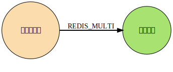
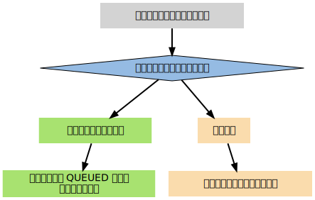

事务
Table of Contents
Redis 通过 MULTI , DISCARD , EXEC 和 WATCH 四个命令来实现事务功能， 接下来：
- 首先讨论使用 MULTI, DISCARD 和 EXEC 三个命令实现的一般事务
- 然后再来讨论带有 WATCH 的事务的实现。
因为事务的安全性也非常重要， 所以最后通过常见的 ACID 性质 对 Redis 事务的安全性 进行了说明
事务
事务提供了一种 将多个命令打包， 然后一次性、按顺序地执行 的机制， 并且 事务在执行的期间不会主动中断 （服务器在执行完事务中的所有命令之后， 才会继续处理其他客户端的其他命令）。以下是一个事务的例子， 它先以 MULTI 开始 一个事务， 然后将 多个命令 入队 到事务中， 最后由 EXEC 命令 触发 事务， 一并执行事务中的所有命令：
redis> MULTI OK redis> SET book-name "Mastering C++ in 21 days" QUEUED redis> GET book-name QUEUED redis> SADD tag "C++" "Programming" "Mastering Series" QUEUED redis> SMEMBERS tag QUEUED redis> EXEC 1) OK 2) "Mastering C++ in 21 days" 3) (integer) 3 4) 1) "Mastering Series" 2) "C++" 3) "Programming"
一个事务从开始到执行会经历以下三个阶段：
- 开始事务
- 命令入队
- 执行事务
下面将分别介绍事务的这三个阶段
开始事务
MULTI 命令的执行标记着事务的开始：
redis> MULTI OK
这个命令唯一做的就是， 将客户端的 REDIS_MULTI 选项打开， 让客户端从非事务状态切换到事务状态

命令入队
当客户端处于非事务状态下时， 所有发送给服务器端的命令都会立即被服务器执行：
redis> SET msg "hello moto" OK redis> GET msg "hello moto"
但是， 当客户端进入事务状态之后， 服务器在收到来自客户端的命令时， 不会立即执行命令， 而是将这些命令全部放进一个事务队列里， 然后返回 QUEUED ， 表示命令已入队：
redis> MULTI OK redis> SET msg "hello moto" QUEUED redis> GET msg QUEUED
以下流程图展示了这一行为：

事务队列是一个数组， 每个数组项是都包含三个属性：
- 要执行的命令 cmd
- 命令的参数 argv
- 参数的个数 argc
举个例子， 如果客户端执行以下命令：
redis> MULTI OK redis> SET book-name "Mastering C++ in 21 days" QUEUED redis> GET book-name QUEUED redis> SADD tag "C++" "Programming" "Mastering Series" QUEUED redis> SMEMBERS tag QUEUED
那么程序将为客户端创建以下事务队列：
| 数组索引 | cmd | argv | argc |
| 0 | SET | ["book-name", "Mastering C++ in 21 days"] | 2 |
| 1 | GET | ["book-name"] | 1 |
| 2 | SADD | ["tag", "C++", "Programming", "Mastering Series"] | 4 |
| 3 | SMEMBERS | ["tag"] | 1 |
执行事务
前面说到， 当客户端进入事务状态之后， 客户端发送的命令就会被放进事务队列里
但其实并不是所有的命令都会被放进事务队列， 其中的例外就是 EXEC , DISCARD , MULTI 和 WATCH 这四个命令
当这四个命令从客户端发送到服务器时， 它们会像客户端处于非事务状态一样， 直接被服务器执行

如果客户端正处于事务状态， 那么当 EXEC 命令执行时， 服务器根据客户端所保存的事务队列， 以先进先出 FIFO 的方式执行事务队列中的命令： 最先入队的命令最先执行， 而最后入队的命令最后执行 。比如说，对于以下事务队列：
| 数组索引 | cmd | argv | argc |
| 0 | SET | ["book-name", "Mastering C++ in 21 days"] | 2 |
| 1 | GET | ["book-name"] | 1 |
| 2 | SADD | ["tag", "C++", "Programming", "Mastering Series"] | 4 |
| 3 | SMEMBERS | ["tag"] | 1 |
| 数组索引 | 回复类型 | 回复内容 |
| 0 | status code reply | OK |
| 1 | bulk reply | "Mastering C++ in 21 days" |
| 2 | integer reply | 3 |
| 3 | multi-bulk reply | ["Mastering Series", "C++", "Programming"] |
当事务队列里的所有命令被执行完之后， EXEC 命令会将 回复队列 作为自己的 执行结果 返回给客户端， 客户端从 事务状态 返回到 非事务状态 ， 至此， 事务执行完毕。事务的整个执行过程可以用以下伪代码表示：
def execute_transaction(): reply_queue = [] # 创建空白的回复队列 # 取出事务队列里的所有命令、参数和参数数量 for cmd, argv, argc in client.transaction_queue: reply = execute_redis_command(cmd, argv, argc) # 执行命令，并取得命令的返回值 reply_queue.append(reply) # 将返回值追加到回复队列末尾 clear_transaction_state(client) # 清除客户端的事务状态 clear_transaction_queue(client) # 清空事务队列 send_reply_to_client(client, reply_queue) # 将事务的执行结果返回给客户端
在事务和非事务状态下执行命令
无论在事务状态下， 还是在非事务状态下， Redis 命令都由同一个函数执行， 所以它们共享很多服务器的一般设置， 比如 AOF 的配置 , RDB 的配置 ，以及 内存限制 ，等等。不过事务中的命令和普通命令在执行上还是有一点区别的，其中最重要的两点是：
- 非事务状态下的命令以单个命令为单位执行， 前一个命令和后一个命令的客户端不一定是同一个
- 而事务状态则是以一个事务为单位，执行事务队列中的所有命令：除非当前事务执行完毕，否则服务器不会中断事务，也不会执行其他客户端的其他命令
- 在非事务状态下，执行命令所得的结果会立即被返回给客户端
- 而事务则是将所有命令的结果集合到回复队列，再作为 EXEC 命令的结果返回给客户端
事务状态下的 DISCARD 、 MULTI 和 WATCH 命令
除了 EXEC 之外， 服务器在客户端处于事务状态时， 不加入到事务队列而直接执行的另外三个命令是 DISCARD , MULTI 和 WATCH ：
- DISCARD 命令用于 取消 一个事务：
- 清空 客户端的整个事务队列
- 将客户端从事务状态调整回 非事务状态
- 返回字符串 OK 给客户端， 说明事务已被取消
Redis 的事务是 不可嵌套 的， 当客户端已经处于事务状态， 而客户端又再向服务器发送 MULTI 时， 服务器只是简单地向客户端 发送一个错误 ， 然后继续等待其他命令的入队
MULTI 命令的发送不会造成整个事务失败， 也不会修改事务队列中已有的数据
- WATCH 只能在客户端 进入事务状态之前 执行， 在事务状态下发送 WATCH 命令会引发一个错误， 但它不会造成整个事务失败， 也不会修改事务队列中已有的数据（和前面处理 MULTI 的情况一样）
带 WATCH 的事务
WATCH 命令用于在 事务开始之前 监视 任意数量的键 ： 当调用 EXEC 命令执行事务时， 如果 任意一个 被监视的键 已经被 其他客户端修改 了， 那么 整个事务不再执行， 直接返回失败 。以下示例展示了一个执行失败的事务例子：
redis> WATCH name OK redis> MULTI OK redis> SET name peter QUEUED redis> EXEC (nil)
以下执行序列展示了上面的例子是如何失败的：
| 时间 | 客户端 A | 客户端 B |
| T1 | WATCH name | |
| T2 | MULTI | |
| T3 | SET name peter | |
| T4 | SET name john | |
| T5 | EXEC |
在时间 T4 ，客户端 B 修改了 name 键的值， 当客户端 A 在 T5 执行 EXEC 时，Redis 会发现 name 这个被监视的键已经被修改， 因此客户端 A 的事务不会被执行，而是直接返回失败
下面就来介绍 WATCH 的实现机制，并且看看事务系统是如何检查某个被监视的键是否被修改，从而保证事务的安全性的
WATCH 命令的实现
在每个代表数据库的 redis.h/redisDb 结构类型中， 都保存了一个 watched_keys 字典， 字典的键是 这个数据库被监视的键 ， 而字典的值则是 一个链表 ， 链表中保存了 所有监视这个键的客户端 。比如说，以下字典就展示了一个 watched_keys 字典的例子：

其中 键 key1 正在被 client2 、 client5 和 client1 三个客户端监视， 其他一些键也分别被其他别的客户端监视着
WATCH 命令的作用， 就是将当前客户端和要监视的键在 watched_keys 中进行关联。举个例子， 如果当前客户端为 client10086 ， 那么当客户端执行 WATCH key1 key2 时， 前面展示的 watched_keys 将被修改成这个样子：
通过 watched_keys 字典：
- 如果程序想检查某个键是否被监视， 那么它只要检查字典中是否存在这个键即可
- 如果程序要获取监视某个键的所有客户端， 那么只要取出键的值（一个链表）， 然后对链表进行遍历即可
WATCH 的触发
在任何对数据库键空间 key space 进行修改的命令成功执行之后 （比如 FLUSHDB , SET , DEL , LPUSH , SADD , ZREM 诸如此类）， multi.c/touchWatchedKey 函数都会被调用：
- 它检查数据库的 watched_keys 字典， 看是否有客户端在监视已经被命令修改的键
- 如果有的话， 程序将 所有监视 这个/这些被修改键的 客户端 的 REDIS_DIRTY_CAS 选项打开

客户端发送 EXEC 命令、触发事务执行时， 服务器会对客户端的状态进行检查：
- 如果客户端的 REDIS_DIRTY_CAS 选项已经被打开，那么说明被客户端监视的键至少有一个已经被修改了，事务的安全性已经被破坏。服务器会放弃执行这个事务，直接向客户端返回空回复，表示事务执行失败
- 如果 REDIS_DIRTY_CAS 选项没有被打开，那么说明所有监视键都安全，服务器正式执行事务
可以用一段伪代码来表示这个检查：
def check_safety_before_execute_trasaction(): if client.state & REDIS_DIRTY_CAS: clear_transaction_state(client) # 安全性已破坏，清除事务状态 clear_transaction_queue(client) # 清空事务队列 send_empty_reply(client) # 返回空回复给客户端 else: execute_transaction() # 安全性完好，执行事务
举个例子，假设数据库的 watched_keys 字典如下图所示：
如果某个客户端对 key1 进行了修改（比如执行 DEL key1 ） 那么所有监视 key1 的客户端， 包括 client2 、 client5 和 client1 的 REDIS_DIRTY_CAS 选项都会被打开 当客户端 client2 、 client5 和 client1 执行 EXEC 的时候， 它们的事务都会以失败告终
最后，当一个客户端结束它的事务时，无论事务是成功执行，还是失败， watched_keys 字典 中和 这个客户端相关的资料 都会被 清除
事务的 ACID 性质
ACID合规性 是一组数据库特性，包括 原子性 Atomicity , 一致性 Consistency , 隔离性 Isolation 和 持久性 Durability ，确保数据库事务高效完成。如果数据库满足ACID合规性的方面，则被认为是ACID合规的：
- 原子性：数据库事务，可以被分解为更小的部分，确保整个数据库事务的完整性
- 一致性：事务遵循适当的数据验证规则，只有符合验证规则的数据才被写入数据库
- 隔离性：可以同时处理而不会产生冲突
- 持久性：事务确保数据被保存
Redis确保了原子性，因为在上一个事务完成之前，您无法进行下一个事务 Redis无法保证一致性，因为Redis有丢失写入数据的风险 Redis确保了隔离性，因为事务彼此分开，并确保之前的事务完成后才能进行下一个事务 Redis无法保证持久性，但是当启用appendonly时，可能会增加Redis数据库的持久性，但会牺牲性能
因此Redis并不完全符合ACID标准，因为它 不满足 一致性 和 持久性
总结
- 事务提供了一种将多个命令打包，然后一次性、有序地执行的机制
- 事务在执行过程中不会被中断，所有事务命令执行完之后，事务才能结束
- 多个命令会被入队到事务队列中，然后按先进先出（FIFO）的顺序执行
- 带 WATCH 命令的事务会将客户端和被监视的键在数据库的 watched_keys 字典中进行关联，当键被修改时，程序会将所有监视被修改键的客户端的 REDIS_DIRTY_CAS 选项打开
- 只有在客户端的 REDIS_DIRTY_CAS 选项未被打开时，才能执行事务，否则事务直接返回失败
Redis 的事务保证了 ACID 中的原子性(A)和隔离性(I)，但并不保证一致性(C)和持久性(D)
Next：订阅与发布 Home：功能实现